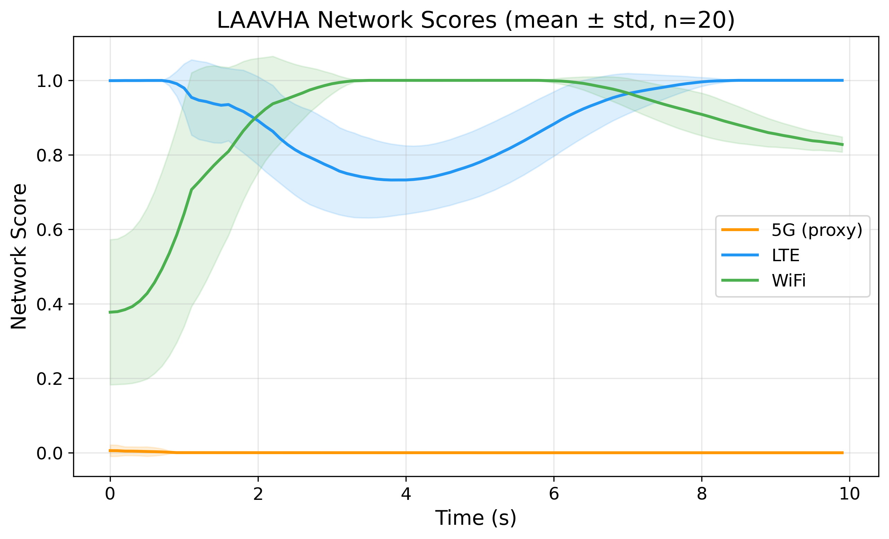
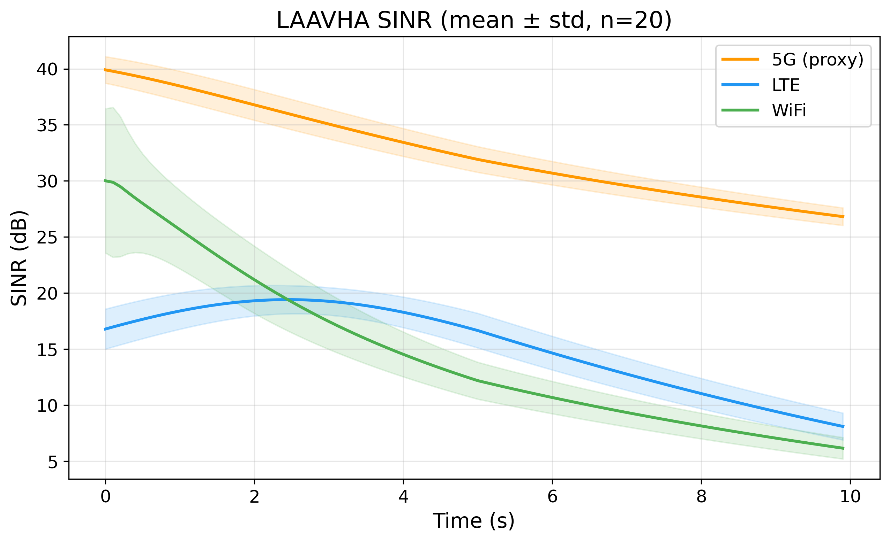
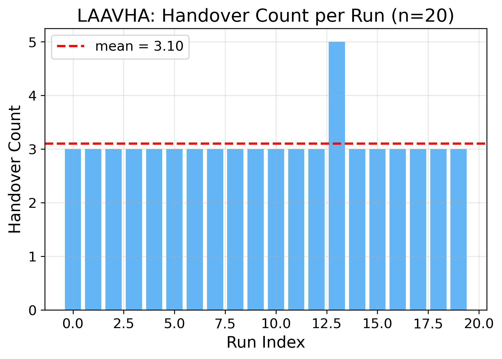

摘 要：针对无人异构网络中不同无线接入技术覆盖范围、链路质量和业务承载能力差异导致的垂直切换决策滞后、乒乓切换频繁以及固定权重难以适应动态场景等问题，研究了一种基于长短期记忆网络与注意力机制的自适应垂直切换方法。该方法首先以信号与干扰加噪声比、参考信号接收功率、时延、吞吐量和丢包率构建候选网络状态向量，利用堆叠长短期记忆网络预测短期网络状态变化；然后引入多头注意力机制，根据移动状态与候选网络质量动态生成属性权重；最后融合当前状态和预测状态构建改进的逼近理想解排序决策矩阵，并通过双重滞后机制抑制不必要切换。基于 ns-3 与 ns3-ai 搭建了决策级复现实验平台，完成了 20 组随机种子的 LAAVHA 推理实验。结果表明，该方法在代理异构网络场景下能够形成稳定的候选网络评分趋势，平均切换次数为 3.10 次，最终接入网络均收敛至 LTE。该研究为无人异构网络智能垂直切换算法的仿真验证和后续协议级实现提供了参考。
关键词：无人异构网络；垂直切换；长短期记忆网络；注意力机制；TOPSIS；ns-3
中图分类号：请补充 文献标志码：A
Abstract: To address decision latency, frequent ping-pong handover and poor adaptability of fixed weights in unmanned heterogeneous networks, an adaptive vertical handover method based on long short-term memory and attention mechanism was studied. A candidate-network state vector was constructed using signal-to-interference-plus-noise ratio, reference signal received power, delay, throughput and packet loss rate. A stacked long short-term memory network was used to predict short-term network states, and a multi-head attention module was introduced to generate dynamic attribute weights according to mobility states and candidate-network quality. An improved TOPSIS decision matrix was then constructed by fusing current and predicted states, while a dual hysteresis mechanism was used to suppress unnecessary handovers. A decision-level reproduction platform was built using ns-3 and ns3-ai, and 20 LAAVHA inference runs with different random seeds were completed. The results show that the method produced stable candidate-network score trends in the proxy heterogeneous-network scenario, with an average handover count of 3.10 and LTE selected as the final access network in all runs. The study provides a reference for simulation verification and future protocol-level implementation of intelligent vertical handover algorithms in unmanned heterogeneous networks.
Key words: unmanned heterogeneous network, vertical handover, long short-term memory, attention mechanism, TOPSIS, ns-3
无人机、无人车等无人系统正逐渐应用于应急通信、智能巡检、物流运输和复杂环境感知等场景。此类系统通常需要在 5G、长期演进（LTE, long term evolution）和无线局域网（WiFi, wireless fidelity）等多种无线接入网络之间保持连续通信。由于不同网络在覆盖范围、传输速率、时延和可靠性方面存在明显差异，无人节点在移动过程中需要根据网络状态及时完成垂直切换，从而保障通信服务的连续性和稳定性。
传统垂直切换方法主要包括基于单一信号强度的方法、基于多属性决策的方法和基于机器学习的方法。基于接收信号强度的方法实现简单，但仅依赖单一指标，难以刻画复杂网络状态，容易在覆盖边缘产生乒乓切换。多属性决策方法能够综合考虑多种网络质量指标，其中逼近理想解排序法（TOPSIS, technique for order preference by similarity to ideal solution）具有计算复杂度低、可解释性较强等优点，但传统方法通常采用固定权重，难以适应节点速度、业务需求和链路状态的动态变化。强化学习等智能方法能够从环境交互中学习切换策略，但训练和部署成本较高，对仿真交互规模和状态空间设计较为敏感。
为兼顾预测性、实时性和可解释性，研究了基于长短期记忆网络（LSTM, long short-term memory）和多头注意力机制（multi-head attention）的自适应垂直切换算法 LAAVHA。该算法利用 LSTM 捕获网络状态时间序列变化趋势，通过注意力机制生成动态属性权重，并结合改进 TOPSIS 完成候选网络排序。与仅依据当前状态的被动式切换相比，该方法能够在网络质量恶化前进行前瞻性判断；与固定权重的多属性决策相比，该方法能够根据移动状态和网络状态自适应调整不同指标的重要性。
考虑无人节点处于 5G、LTE 和 WiFi 共同覆盖的异构网络环境中。不同接入网络具有不同的覆盖半径、信号质量和传输能力。无人节点在三维空间中移动，并周期性采集各候选网络的状态信息。对于第 i 个候选网络，其在时刻 t 的状态向量定义为
Si(t)=[SINRi(t), RSRPi(t), Di(t), Ti(t), PLRi(t)]。 （1）
其中，SINR 表示信号与干扰加噪声比，RSRP 表示参考信号接收功率，D 表示端到端时延，T 表示吞吐量，PLR 表示丢包率。SINR、RSRP 和吞吐量属于效益型指标，数值越大表示网络质量越好；时延和丢包率属于成本型指标，数值越小表示网络质量越好。为消除不同指标量纲差异，采用归一化方法将所有指标统一映射到同一评价方向，使归一化后的属性值越大表示候选网络越优。
无人节点移动会引起候选网络信号质量和传输性能持续变化。若仅依据当前时刻指标进行切换决策，容易在高速移动或覆盖边缘场景下出现滞后切换。因此，算法将过去若干个决策周期的网络状态组织为时序输入，用于预测短期未来状态，并将预测结果与当前状态共同用于最终决策。
LSTM 通过门控结构缓解传统循环神经网络在长序列训练中的梯度消失问题，适合处理具有时间相关性的网络状态序列。LAAVHA 使用两层堆叠 LSTM 对候选网络状态进行短期预测。第一层 LSTM 用于提取底层时序变化特征，第二层 LSTM 用于进一步提取高层抽象特征，并通过全连接层输出未来时刻的网络状态估计值。
设时间窗口长度为 T，第 i 个候选网络的历史输入序列为
Xi=[Ŝi(t−T+1), Ŝi(t−T+2), …, Ŝi(t)]。 （2）
经 LSTM 模块处理后，得到预测状态 Ŝi(t+Δt)。该预测状态反映短期未来网络质量变化趋势，可为后续切换决策提供前瞻性信息。
在垂直切换决策中，不同网络属性的重要性会随场景变化而变化。例如，高速移动时，信号质量和链路稳定性对切换决策更加关键；数据密集型业务中，吞吐量的重要性更高；实时控制业务中，时延和丢包率应具有更高权重。固定权重难以刻画这种动态变化。
LAAVHA 引入多头注意力机制，输入当前候选网络状态矩阵和移动状态向量，通过不同注意力头学习属性之间的相关性，再经池化和全连接层生成动态权重向量
w=[wSINR, wRSRP, wD, wT, wPLR]，且 ∑wj=1。 （3）
该权重向量随网络状态和移动状态自适应变化，用于后续 TOPSIS 加权归一化矩阵计算。由此，算法能够在不同场景下自动调整决策关注重点，提高网络选择的适应性。
TOPSIS 的基本思想是选择最接近正理想解、最远离负理想解的候选方案。为避免传统 TOPSIS 仅依赖当前状态导致的被动决策，LAAVHA 将当前状态与 LSTM 预测状态进行融合，构建决策矩阵
dij=α·ŝij(t)+(1−α)·ŝij(t+Δt)。 （4）
其中，α 为融合系数，用于调节当前状态和预测状态在决策中的占比。得到融合决策矩阵后，算法依次执行向量归一化、动态权重加权、正负理想解确定、欧氏距离计算和相对贴近度计算。候选网络 i 的相对贴近度为
Ci=Di−/(Di++Di−)。 （5）
其中，Di+ 和 Di− 分别表示候选网络到正理想解和负理想解的距离。Ci 越大，说明候选网络综合质量越优。
为降低网络状态瞬时波动引发的乒乓切换，算法设置双重滞后机制。首先，仅当目标网络相对贴近度超过当前网络一定阈值时，才满足切换必要条件；其次，只有连续多个决策周期满足切换条件时才执行切换。该机制能够过滤短时信道波动，提高决策稳定性。
| 步骤 | 说明 |
|---|---|
| 1 | 采集 5G、LTE 和 WiFi 候选网络的 SINR、RSRP、时延、吞吐量和丢包率。 |
| 2 | 对效益型和成本型指标进行归一化处理，构建历史状态序列。 |
| 3 | 利用堆叠 LSTM 预测各候选网络短期未来状态。 |
| 4 | 基于多头注意力机制生成动态属性权重。 |
| 5 | 融合当前状态与预测状态，构建改进 TOPSIS 决策矩阵。 |
| 6 | 计算候选网络相对贴近度，选取得分最高的目标网络。 |
| 7 | 结合贴近度阈值和时间窗口滞后机制输出最终切换决策。 |
为验证 LAAVHA 决策流程，基于 ns-3.45 和 ns3-ai 搭建 C++ 网络仿真与 Python 模型推理协同平台。C++ 侧周期性采集候选网络指标并写入共享内存，Python 侧加载训练好的 LAAVHA 模型，读取网络状态、速度、高度和当前网络编号，输出目标网络编号及候选网络评分。网络编号中，0 表示 5G，1 表示 LTE，2 表示 WiFi。
实验采用 20 组随机种子，仿真时长为 10 s，决策周期为 0.1 s，每组实验产生 100 次决策。为增加场景差异，启用位置和高度扰动，位置扰动范围为 30 m，高度扰动范围为 10 m。实验采用 LAAVHA 单算法模式，记录每次决策的候选网络评分、SINR、当前网络、目标网络和切换标记，并生成多运行均值与标准差图。
| 参数 | 取值 |
|---|---|
| 仿真平台 | ns-3.45，ns3-ai，Python/PyTorch |
| 候选网络 | 5G、LTE、WiFi |
| 算法模式 | LAAVHA |
| 运行次数 | 20 |
| 仿真时长 | 10 s |
| 决策周期 | 0.1 s |
| 每次运行决策数 | 100 |
| 随机种子 | 100-119 |
| 位置扰动 | 30 m |
| 高度扰动 | 10 m |
需要说明的是，当前复现实验属于决策级验证。5G 候选网络由代理链路表示，其 SINR 和 RSRP 由基于位置的传播模型计算，传输类指标来自点到点代理流的 FlowMonitor 统计；切换事件表示 LAAVHA 输出的网络编号变化，并未执行真实 WiFi 解除关联、LTE 分离或 5G NR 协议栈切换。各候选网络指标来源见表3。
| 网络 | SINR/RSRP | 时延 | 吞吐量 | 丢包率 |
|---|---|---|---|---|
| WiFi | 基于 MobilityModel 位置的传播代理值 | FlowMonitor | PacketSink 区间接收字节 | FlowMonitor |
| LTE | 基于 MobilityModel 位置的传播代理值 | FlowMonitor | FlowMonitor | FlowMonitor |
| 5G | 到假设 gNB 的传播代理值 | 点到点代理流 FlowMonitor | 点到点代理流 FlowMonitor | 点到点代理流 FlowMonitor |
图1所示为 20 次运行中 LAAVHA 对 5G、LTE 和 WiFi 候选网络输出评分的均值与标准差。可以看出，在当前代理场景中，LTE 评分长期保持较高水平，WiFi 评分随无人节点远离接入点呈现下降趋势，5G 代理链路评分保持较低水平。该结果表明，模型能够根据候选网络状态变化持续调整网络评价，并最终倾向选择综合质量更稳定的 LTE 网络。

图2所示为各候选网络 SINR 随仿真时间变化的均值与标准差。WiFi SINR 随节点移动距离变化出现明显下降，反映出热点覆盖网络对位置变化较为敏感；LTE SINR 相对平稳；5G 代理链路 SINR 由假设基站位置和传播模型共同决定。SINR 变化趋势与候选网络评分趋势基本一致，说明信号质量仍是垂直切换决策中的重要因素，但最终选择并非由单一 SINR 指标决定，而是由多属性融合评价给出。

图3所示为 20 次独立运行的切换次数统计结果。所有运行均成功完成，每次运行包含 100 个决策周期。20 次运行的平均切换次数为 3.10 次，其中 19 次运行的切换次数为 3 次，1 次运行的切换次数为 5 次。所有运行的最终网络编号均为 1，即最终接入 LTE。该结果说明，在当前移动轨迹和代理网络条件下，LAAVHA 能够较快从初始网络调整到综合评分更优的候选网络，并在后续决策中保持相对稳定。

| 统计项 | 结果 |
|---|---|
| 成功运行次数 | 20/20 |
| 每次运行决策数 | 100 |
| 平均切换次数 | 3.10 |
| 切换次数分布 | 19 次运行发生 3 次切换，1 次运行发生 5 次切换 |
| 最终网络分布 | LTE：20/20 |
综合评分趋势、SINR 变化和切换次数统计可以看出，LAAVHA 在当前复现实验中表现出较稳定的决策输出。LSTM 预测模块为决策提供了网络状态变化趋势，注意力模块能够动态调整属性权重，改进 TOPSIS 则将多属性信息转化为可解释的候选网络排序。双重滞后机制进一步减少了由短时指标波动引起的频繁切换。
面向无人异构网络垂直切换场景，研究了基于 LSTM-Attention 的 LAAVHA 自适应垂直切换方法。该方法利用堆叠 LSTM 预测短期网络状态，通过多头注意力机制生成动态属性权重，并结合融合当前状态与预测状态的改进 TOPSIS 完成候选网络选择。基于 ns-3 与 ns3-ai 的决策级复现实验表明，在 20 组随机种子下，LAAVHA 能够形成稳定的候选网络评分和切换决策，平均切换次数为 3.10 次，最终接入网络均为 LTE。
当前实验仍存在一定局限：5G 候选网络采用代理链路表示，并非真实 NR/5G-LENA 协议栈；切换记录为决策层网络编号变化，尚未执行真实协议层 attach/detach；随机性主要来自初始位置和高度扰动，尚未引入更复杂的业务流、信道衰落和长时长轨迹。后续将进一步引入真实 5G NR 模块和协议级切换执行机制，并开展决策周期、移动速度、扰动幅度和信道模型等参数消融实验，以验证算法在更复杂无人异构网络场景中的适用性。
[1] YU H, MA Y, YU J. Network selection algorithm for multiservice multimode terminals in heterogeneous wireless networks[J]. IEEE Access, 2019, 7: 46240-46260.
[2] TAN X, CHEN G, SUN H. Vertical handover algorithm based on multi-attribute and neural network in heterogeneous integrated network[J]. EURASIP Journal on Wireless Communications and Networking, 2020, 2020(1): 202.
[3] TAN K, BREMNER D, LE KERNEC J, et al. Intelligent handover algorithm for vehicle-to-network communications with double-deep Q-learning[J]. IEEE Transactions on Vehicular Technology, 2022, 71(7): 7848-7862.
[4] AYASS T, COQUEIRO T, CARVALHO T, et al. Unmanned aerial vehicle with handover management fuzzy system for 5G networks: Challenges and perspectives[J]. Intelligence & Robotics, 2022, 2(1): 20-36.
[5] WANG Z, LV Z, XU X, et al. Vertical switching algorithm for unmanned aerial vehicle in power grid heterogeneous communication networks[J]. Electronics, 2024, 13(13): 2612.
[6] ALAM S, SULISTYO S, MUSTIKA I W, et al. Handover decision for V2V communication in VANET based on moving average slope of RSS[J]. Journal of Communications, 2021, 16(7): 284-293.
[7] SATAPATHY P, MAHAPATRO J. An efficient multicriteria-based vertical handover decision-making algorithm for heterogeneous networks[J]. Transactions on Emerging Telecommunications Technologies, 2022, 33(4): e4409.
[8] GOUTAM S, UNNIKRISHNAN S, KARANDIKAR A. Algorithm for handover decision based on TOPSIS[C]//2020 International Conference on UK-China Emerging Technologies. Piscataway: IEEE Press, 2020: 1-4.
[9] XIAO K Y, LI C G. Vertical handoff decision algorithm for heterogeneous wireless networks based on entropy and improved TOPSIS[C]//2018 IEEE 18th International Conference on Communication Technology. Piscataway: IEEE Press, 2018: 706-710.
[10] AHMED I I O, IPAYE A A, MITROPOULOS D N G, et al. Vertical handover E-TOPSIS algorithm mathematical model using AHP and standard deviation weighing method[C]//2019 International Conference on Computer, Control, Electrical, and Electronics Engineering. Piscataway: IEEE Press, 2019: 1-5.
[11] SILVA F S D, LIMA M P S, CORUJO D, et al. A comprehensive step-wise survey of multiple attribute decision-making mobility approaches[J]. IEEE Access, 2024.
[12] KAUR G, GOYAL R K, MEHTA R. An efficient handover mechanism for 5G networks using hybridization of LSTM and SVM[J]. Multimedia Tools and Applications, 2022, 81(26): 37057-37085.
[13] KIM S, LIM H. Reinforcement learning based handover management for 5G networks[J]. IEEE Wireless Communications Letters, 2022, 11(5): 1045-1049.
[14] ZAID M, KADIR M K A, SHAYEA I, et al. Machine learning-based approaches for handover decision of cellular-connected drones in future networks: A comprehensive review[J]. Engineering Science and Technology, an International Journal, 2024, 55: 101732.
[15] AL-HOURANI A, KANDEEPAN S, LARDNER S. Optimal LAP altitude for maximum coverage[J]. IEEE Wireless Communications Letters, 2014, 3(6): 569-572.
[16] PANAITOPOL D, JIN Y, TANG R, et al. Requirements on satellite access node and user equipment for non-terrestrial networks in 5G new radio of 3GPP Release-17[J]. International Journal of Satellite Communications and Networking, 2023, 41(3): 289-301.
[17] MALASHIN I, TYNCHENKO V, GANTIMUROV A, et al. Applications of long short-term memory networks in polymeric sciences: A review[J]. Polymers, 2024, 16(18): 2607.
[18] SOYDANER D. Attention mechanism in neural networks: Where it comes and where it goes[J]. Neural Computing and Applications, 2022, 34(16): 13371-13385.
[19] YIN H, LIU P, LIU K, et al. ns3-ai: Fostering artificial intelligence algorithms for networking research[C]//Proceedings of the 2020 Workshop on ns-3. New York: ACM, 2020: 57-64.
[20] MANZOOR S, MANZOOR M, MANZOOR H, et al. Which simulator to choose for next generation wireless network simulations? ns-3 or OMNeT++[J]. Engineering Proceedings, 2023, 46(1): 36.
作者姓名（出生年月），性别，学位，单位，职称/职务，主要研究方向：无人异构网络、智能垂直切换、网络仿真等。请根据实际情况补充。
编辑提示：投稿前需补充真实作者、单位、基金项目、中图分类号、作者简介和参考文献中文译名；如需严格满足“参考文献 30 篇以上”，可继续从毕业论文参考文献中筛选补足。